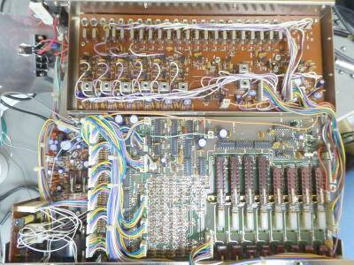
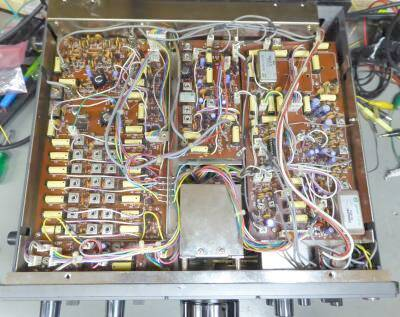
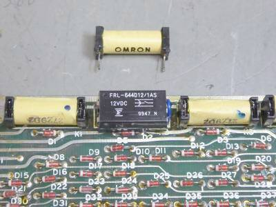
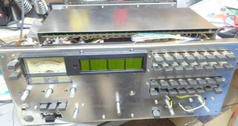
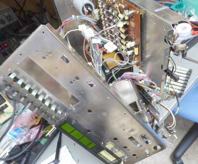
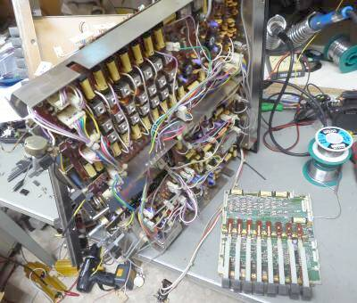

 |
本体上蓋を開けたところです
上の方にずらっと並んでいるのがバンド切替用のクリスタル群です
下に見えるプッシュ・スイッチは、バンド切替用のもので、２段を使って拡張（５００ＫＨｚ単位）するように構成されています
この基板は、デジタル表示ドライブ基板です
この基板が取り付けられているフロント・パネルに取り付いたシャーシの下にモード切替基板があります
左下に見える基板が､ＭＩＣ／AF基板
キャリアユニットは、この写真では見えませんが、その上に位置します
見えている基板の真ん中やや上あたりの下に、ＡＣトランスが取り付いています |
 |
こちらは、底蓋を外した内部です
薄い黄色に見える長方形のものは、リード･リレーです
一般的にはダイオード･スイッチかも知れませんが、アイソレーションなど、もしかしたら機械的な切替のほうが良いという判断だったのかも知れません
右上に見えているのは、２．４ＫＨｚフィルタ（その横に３本のフィルタ・スペースあり）で、下に同様に見えているものはＦＭ用のＤＩＳＣです
一般にＦＭ用のＩＦは分けて別にしてありますが、本機では全て共通のＩＦとなっています
左部分が、ＲＦ部（バンド毎の同調回路が並んでいます） |
 |
リード･リレーのアップです
今回、ＳＳＢ，ＣＷが全く受信できなかった（正確には、全く受信音が得られなかった）故障の理由が、このはずしてあるリード・リレー・コイルの断線でした
もちろん使ってあったものは廃番になっていますので、構造的に接点間隔がほぼ同じの入手できるものを探し、工夫をして置き換えました
本機入手時には、７／１４４ＭＨｚ帯が全くと言って良いくらい送受できず
他バンドも、送信できるのはＣＷとＦＭだけで、ＡＭとＳＳＢは、全く送信できず、受信に関しては、ＣＷとＳＳＢについて全く音が出ない（Ｓメータは振る）という状態でした |
 |
修理のために基板を取り出す
フロント・パネルに取り付けたシャーシの下にある基板・・・上の写真にある基板です、取り出すために、まずフロントパネルを外すところからスタート
ここまではなんてことは無いのですが・・・
本機は、シャーシを挟んで、最高４段の基板構成です |
 |
フロント・パネル・シャーシの取り外し
さて、どう対処すれば良い？お悩み中のワンショットです
まるで壊す寸前状態です
正しい分解手順が分かりません
それ以前に、回路図も何もありません
唯一、見つかったのがＷＥＢにあったブロック・ダイヤグラム、でも助かりました
ＣＷ、ＳＳＢが全く音が出ないことについては、モード切替に連動したリード･リレーに問題があるという予測はたちました
たまたま、ＡＭとお隣のＬＳＢボタンを同時に押したら検波音が出た！ ん？？
ＡＣトランスと、平滑コンデンサ（２個）が見えています |
 |
このモード切替スイッチが乗っている基板をやっと外すことが出来ました
これで、予想どおりリード･リレーの断線が確定となり、交換することが出来ました
ひとつ欠けてみえるところのリード・リレーがNGでした
ご覧のように、フロント･パネル・シャーシは、取り外しています
余談ながら、二度とこのような分解作業はしたくありません！！ |
入手した本機ですが、結露したような痕跡が各所にありましたが、まずまずの保管状態であったと思われます（４０年前の新製品 日本にあって、日本製品であればこんなもの）
ＴＲＩＯ製品に見られる、基板の取付部の接触不良による不安定さは見受けられませんでした
トラブルの続きですが、
ＶＯＸが働かない、ＣＷではブレーク・インできない（要は、ＰＴＴでしか送信できない）
明らかにＭＩＣ入力／ＡＦ基板上に問題がある・・・ＶＯＸアンプＩＣ、制御ＴＴＬＩＣ・・・この際ですから全部外した上でソケットを取り付けて、手持ち分で交換しました（犯人は、ＬＭ３９００Ｎと７４ＬＳ１２３）
ＡＭ、ＳＳＢでパワーが出ない・・・これは、予想どおりＤＢＭ-ＩＣ（ＬＭ１４９６）がＮＧでした
こちらも取り外して、ソケットを取り付けた上でＩＣそのものを交換しました
あとは、基板の半田不良というか劣化
キャリア・レベルが低いと思ったら、キャリア・ユニットから引かれてくるケーブルのアース側が浮いていた
受信感度（送信パワー）が、変化・・・リード・リレーの半田付けの劣化・・・こちらが２箇所
１４４ＭＨｚ帯の感度を除くと、あとは調整で送受ともスペック・データはクリアできたように思います |
|
今回の挑戦では、１４４ＭＨｚ帯で、思うような感度が得られません
また１．８～１４ＭＨｚ帯と、２１～５０ＭＨｚ帶では、内部雑音の量が違うし同じレベルの信号に対してＳメータの振れも違う、明らかに増幅度が異なります
カタログを見ても、そのことを思わせる記載があります
|
受信感度 |
ﾀﾞｲﾅﾐｯｸ･ﾚﾝｼﾞ |
三次ｲﾝﾀｰｾﾌﾟﾄﾎﾟｲﾝﾄ（IP3） |
| １．８～１４ＭＨｚ帯 |
０．３５μV S/N１０ｄｂ |
１００ｄB |
＋２０ｄｂｍ |
| ２１～１４４MHｚ帯 |
０．２５μV S/N１０ｄｂ |
９５ｄB |
|
ＴｏｐにＣＡＴＶ用Ｔｒ（２ＳＣ１４２６：受信のトップながら、ヒートシンクが取り付いている！）、ＭｉｘにはＤＢＭを採用、その出力には１６ＫＨｚ巾のフィルタを採用（ＦＭ時の選択度は、これで決まる）したシングル・スーパー構成で、当時としてはかなり高いダイナミック・レンジを得ています
ローバンドは、ダイナミック・レンジを優先し、ハイ・バンドは感度を優先
これらの設計が特徴的に思えます
回路図がなく、これ以上の追求は止めました！（１４４ＭＨｚＴｏｐは別回路で、単純にここに使ってある２ＳＣ１４２６の劣化かも）
現状で言えることは、２１～５０ＭＨｚ帯については、非常に感度が良い、です
１．８～１４ＭＨｚ帯は、普通に感度が良いです！
ＶＦＯは１１ＭＨｚ台の自励発振ですから、それなりのドリフトはあります（ＶＦＯですから、動きます！）
今回は、大変よく遊ばせていただきました（頭の体操と、手先の運動をさせていただきました）
コレクションが1台（1機種）増えました |